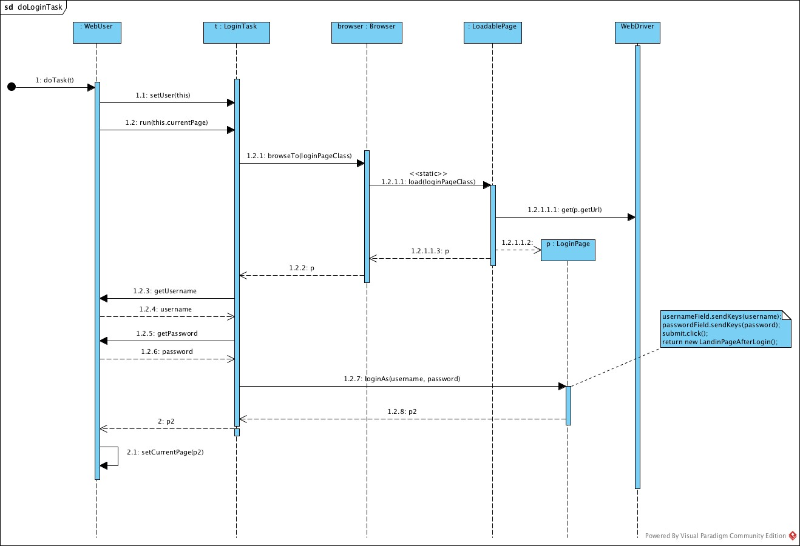

selenium-tinafw
A minimal and effective Selenium framework, not a wrapper.
For a quick insight, please see the sample provided in the package sample, which implements a small test suite showing all of the concepts introduced in this work. Start from SampleWebTest, down to the WebTasks (i.e. OnMyAboutMePage, Search, CanCompliment), down to page objects (SearchResultsPage, SearchResult, etc.)
Overview
selenium-tinafw aspires to serve as a basis for any test suite/framework using Selenium WebDriver (Java bindings only).
It sits on top of Selenium WebDriver and provides a number of abstractions that encourage you to write better, more focused, more maintainable, more readable code, in a structured, organized way.
Wraps without wrapping. Selenium WebDriver's API is not hidden in any way. You could virtually access a WebDriver instance from a test class (although you are encouraged not to do so, unless you want to break cohesion). We believe that WebDriver is such a beautiful API that it's a shame to hide it.
Features
Some of the services/features we proudly provide/offer:
-
WebTaskhierarchy, the orchestrators of page objects:- helps keeping your code organized: each concrete WebTask is supposed to be a Given/When/Then step)
- and highly readable (fluent interface): see e.g. SampleWebTest
-
solves the following problem in an elegant way:
Given two tasks that run sequentially, the first does something and ends at a certain page. How can the second task know which was the last page the first task was visiting?
(a naive solution being "every task restarts navigating the SUT from the home page").
WebDriverFactoryhierarchy: elegant solution solving the problem of creating instances of WebDriver, modeled using the decorator design pattern.BDD-style tests are not only supported but also strongly encouraged. You can write BDD tests by wrapping your own WebTask's in a
givenwhenorthentask (each of which is aCompositeWebTask). See also WebTasks.BDD Please see SampleWebTest for an example of usage. For an introduction to BDD, please see the article Introducing BDD, by Dan North.HTML reports with embedded screenshots for each failing test, thanks to HtmlReporter
the ability to run each test on many different browsers (or just one) by simply setting the property
tinafw.browsers = chrome, firefoxthe ability to retry a failed test for a given number of times (configurable). See TestRetrier
an automatic mechanism for closing browsers as soon as a test finishes, as well as the option to disable such a mechanism by setting a property. See BrowserManager
-
a clean directory structure, aka multilayered architecture, with:
- the tests layer, for keeping your test cases along with their data
- the domain layer, containing concepts like User and Browser, and supposed to contain the concepts
of your own domain as well, e.g.
BlogPost,BlogComment - the tasks layer, containing the orchestrators of page objects
- the ui layer, with page objects
-
meaningful logs, e.g.:
INFO CompositeWebTask - BEGIN subtask Given INFO CompositeWebTask - BEGIN subtask OnMyAboutMePage DEBUG PageHelper$Navigation - Page at URL http://alb-i986.me/ loaded INFO BasePage - Loading page MyAboutMePage DEBUG PageHelper - BEGIN Explicit wait (timeout=15s). Waiting until visibility of [[ChromeDriver: chrome on MAC (e8eac3735de18ef7920ce08755d3f6bf)] -> css selector: #profile_box h1.name] DEBUG PageHelper - END Explicit wait: visibility of [[ChromeDriver: chrome on MAC (e8eac3735de18ef7920ce08755d3f6bf)] -> css selector: #profile_box h1.name] INFO CompositeWebTask - END subtask OnMyAboutMePage INFO CompositeWebTask - END subtask Given INFO CompositeWebTask - BEGIN subtask When INFO CompositeWebTask - BEGIN subtask Search INFO BasePage - Loading page SearchResultsPage DEBUG PageHelper - BEGIN Explicit wait (timeout=15s). Waiting until visibility of [[ChromeDriver: chrome on MAC (e8eac3735de18ef7920ce08755d3f6bf)] -> css selector: #search-results div] DEBUG PageHelper - END Explicit wait: visibility of [[ChromeDriver: chrome on MAC (e8eac3735de18ef7920ce08755d3f6bf)] -> css selector: #search-results div] INFO CompositeWebTask - END subtask Search INFO CompositeWebTask - END subtask When INFO CompositeWebTask - BEGIN subtask Then INFO CompositeWebTask - BEGIN subtask CanCompliment INFO CompositeWebTask - END subtask CanCompliment INFO CompositeWebTask - END subtask Then
Usage
Please see the Getting started page on the wiki.
A glimpse: UML Sequence Diagrams

Design goals
- small, clean, Object-based API (here, quoting Simon Stewart)
- not a wrapper
- high cohesion.
- flexibility
- poetry (to be, as well as to allow for)
Requirements
- Java 8 (see e.g. LoadablePage, which makes use of static methods in interfaces)
- Maven
- Graphviz
Graphviz is actually optional: it is needed for generating javadocs with pretty cool UML class diagrams (thanks UMLGraph!). So you're not gonna need it unless you want to run mvn site or mvn javadoc:javadoc.
Dependencies
The main dependencies are:
- selenium-java
- junit
- log4j
Please see the POM file for more details.
TODO
- add
PageComponenthierarchy (soon to be available) - make it a data-driven framework